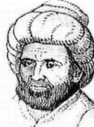

Harezmi
Cebir biliminin kurucusu olan Harezmi, aynı zamanda astronomi ve coğrafya alanlarında da çalışmış, yaptığı katkılarla bu bilim dallarının gelişiminde önemli rol oynamıştır. Hayatı hakkındaki çok sınırlı bilgilere göre, halife el-Memûn döneminde şimdilerin Bilimler Akademisi görevini gören ve dönemin birçok ünlü bilgininin toplandığı, zengin bir kütüphanesi ve gelişmiş bir gözlemevi de bulunan Bilgelik Evi’nin yöneticiliğini yapmış ve saray astronomu olarak çeşitli gözlemler gerçekleştirmiştir.
Ebû Muhammed İbn Musa el-Harezmi’nin doğum ve ölüm tarihleri tam olarak bilinmiyor, ancak çeşitli Orta Çağ tarih kaynaklarında yer alan ifadelere dayanarak 780 yılı civarında Horasan bölgesindeki Harezm şehrinde doğduğu ve 850 yılında Bağdat’ta öldüğü kabul ediliyor.
Hârezmî’nin asıl ünü matematikle ilgili çalışmalarından gelir, özellikle cebir alanında yaptığı çalışmalar bu bilim dalının sonraki gelişimini doğrudan belirleyen bir nitelik taşır. Ünlü bilim tarihçisi ve felsefecisi George Sarton (1884 – 1956) üç ciltlik Bilim Tarihine Giriş adlı eserinde IX. yüzyılın birinci yarısını Hârezmî Dönemi diye adlandırarak Hârezmî’nin bu yönüne dikkat çeker.
Harezmi'nin Eserleri
1. Cebir ve Mukâbele Hesabı Üzerine Özet Kitap (Kitâb el-Muhtasar fî Hisâb el-Cebr ve’l Mukâbele)
2. Hint Hesabı Üzerine (Kitâb el-Hisâb el-Hindî)
3. Yer’in Biçimi Üzerine (Kitâbu Suret el-Ard)
4. Sindhind Zîci (Zîc el-Sindhind)
5. Usturlap Yapımı Üzerine (Kitâb al-Amal bil-Usturlâb)
6. Toplama ve Çıkarma Üzerine (Kitâb elCem‘ ve el-Tefrîk)
Günümüze tam metin olarak ulaşan bu eserlerden, Hârezmî’nin aritmetik, cebir, geometri, astronomi ve coğrafya alanlarında çalıştığı anlaşılıyor.